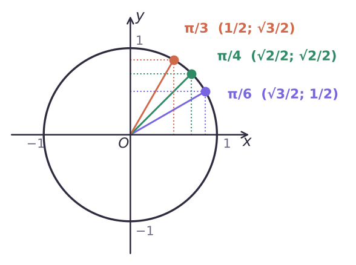

Теория
В 9 классе по геометрии ты находил синус и косинус углов от 0° до 180° с помощью полуокружности. Теперь угол поворота может быть любым, поэтому возьмём всю единичную окружность.
Синус и косинус
Пусть точка P(x; y) единичной окружности получена поворотом точки P₀(1; 0) на угол α. Косинусом угла α называют абсциссу x этой точки, синусом — её ординату y: cos α = x, sin α = y.

Запомни образ: косинус — абсцисса (по горизонтали), синус — ордината (по вертикали). Больше ничего учить не нужно: любое значение можно «прочитать» с окружности.
Точки на осях дают первые значения:
| α | 0 | π/2 | π | 3π/2 | 2π |
|---|---|---|---|---|---|
| cos α | 1 | 0 | −1 | 0 | 1 |
| sin α | 0 | 1 | 0 | −1 | 0 |
Для углов π/6, π/4, π/3 координаты знакомы по прямоугольным треугольникам с углами 30°, 45°, 60°:

| α | 0 | π/6 (30°) | π/4 (45°) | π/3 (60°) | π/2 (90°) |
|---|---|---|---|---|---|
| sin α | 0 | 1/2 | √2/2 | √3/2 | 1 |
| cos α | 1 | √3/2 | √2/2 | 1/2 | 0 |
| tg α | 0 | √3/3 | 1 | √3 | — |
| ctg α | — | √3 | 1 | √3/3 | 0 |
Тангенс и котангенс
Тангенсом угла α называют отношение синуса к косинусу: tg α = sin α / cos α. Котангенсом — отношение косинуса к синусу: ctg α = cos α / sin α.
Делить на ноль нельзя, поэтому tg α определён, только если cos α ≠ 0, а ctg α — если sin α ≠ 0.
Найди все α, при которых а) sin α = 0; б) cos α = 0.
а) Ордината равна нулю у двух точек окружности: (1; 0) и (−1; 0). Они получаются поворотами на 0, π, 2π, −π, … — то есть на α = πk, k ∈ Z.
б) Абсцисса равна нулю у точек (0; 1) и (0; −1): углы π/2, 3π/2, −π/2, … — α = π/2 + πk, k ∈ Z.
Отсюда области определения: tg α — при α ≠ π/2 + πk, ctg α — при α ≠ πk.
Функции числового аргумента и их значения
Каждому числу x поставим в соответствие угол в x радиан. Так получаются функции y = sin x, y = cos x, y = tg x, y = ctg x. Запись sin 2 означает синус угла в 2 радиана (а не в 2 градуса!).
| Функция | Область определения | Область значений |
|---|---|---|
| y = sin x | R | [−1; 1] |
| y = cos x | R | [−1; 1] |
| y = tg x | x ≠ π/2 + πk, k ∈ Z | R |
| y = ctg x | x ≠ πk, k ∈ Z | R |
Почему sin и cos лежат в [−1; 1]: это координаты точек окружности радиуса 1, дальше чем на 1 от осей они не уходят. А вот tg принимает любые значения: проведём прямую x = 1 — ось тангенсов. Луч OP пересекает её в точке с ординатой tg α, и эта точка может оказаться сколь угодно высоко или низко.

Углам α и α + 2πk соответствует одна точка, поэтому sin(α + 2πk) = sin α, cos(α + 2πk) = cos α. Для тангенса и котангенса повтор происходит уже через π: tg(α + πk) = tg α, ctg(α + πk) = ctg α.
sin α и cos α никогда не бывают больше 1 или меньше −1. Если в задаче получилось sin x = 1,2 — у уравнения нет решений. А tg и ctg могут быть любыми.
Разбор примеров
Вычисли: а) sin 0 + cos π − tg π/4; б) 2sin π/6 + cos² π/4; в) sin 3π/2 · cos 2π + ctg π/2.
а) 0 + (−1) − 1 = −2; б) 2 · 1/2 + (√2/2)² = 1 + 1/2 = 3/2; в) (−1) · 1 + 0 = −1.
Найди наибольшее и наименьшее значения выражения 1 − 4cos α.
−1 ≤ cos α ≤ 1. Умножим на −4 (знаки неравенства меняются): −4 ≤ −4cos α ≤ 4. Прибавим 1: −3 ≤ 1 − 4cos α ≤ 5.
Наименьшее значение −3 (при cos α = 1), наибольшее 5 (при cos α = −1).
а) Возможно ли sin α = √3? б) При каких a возможно cos x = a² − 1?
а) √3 ≈ 1,73 > 1 — невозможно.
б) Нужно −1 ≤ a² − 1 ≤ 1, то есть 0 ≤ a² ≤ 2: −√2 ≤ a ≤ √2.
Найди все x, при которых а) sin x = 1; б) cos x = −1.
а) Ордината 1 только у точки (0; 1): x = π/2 + 2πk. б) Абсцисса −1 только у точки (−1; 0): x = π + 2πk, k ∈ Z.
Задачи урока
Реши в тетради. Ответы разберём на занятии.
Тест к уроку
Домашнее задание
Задачи Д1–Д6 ниже. Выписать таблицу значений sin, cos, tg, ctg для 0, π/6, π/4, π/3, π/2 и выучить её; помнить области определения и значений четырёх функций.